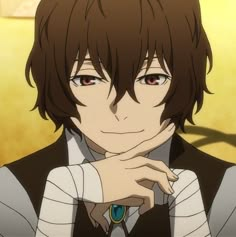

....Muitas pessoas não sabem, mas os personagens do anime Bungou stray dogs foram inspirados em autores de livros reais do mundo inteiro.
Nessa página vou mostrar os que eu mais gosto, sua foto no anime e sua foto na vida real. Além disso, irei fazer uma breve descrição.
Personagens:

Osamu Dazai (Anime)
Osamu Dazai (Vida real)
Clicando aqui você pode mais sobre esse persogem!
Dazai é um detetive da Agência Armada para Detenção de Pessoas com Habilidades Especiais,
conhecido por sua personalidade peculiar e sua obsessão por suicídio.
Habilidade: "No Longer Human", permite que ele anule qualquer habilidade sobrenatural com um simples toque.
Fiódor Dostoiévski (Anime)
Fiódor Dostoiévski (Vida real)
Fiódor Dostoiévski é um dos antagonistas mais complexos e intrigantes de Bungo Stray Dogs.
Inspirado no renomado escritor russo, Fiódor é um homem calculista e manipulador,
com um objetivo obscuro que o leva a tramar planos elaborados para alcançar seus fins.
Habilidade: "Crime e Castigo", lhe permite manipular a causalidade e infligir punições aos outros.
Ele é capaz de criar situações em que as pessoas são forçadas a cometer atos terríveis.

Chuuya Nakahara (Anime)
Chuuya Nakahara (Vida real)
Chūya Nakahara é um dos personagens mais populares e complexos de Bungo Stray Dogs.
Como executivo da Máfia do Porto, ele é conhecido por seu temperamento explosivo, habilidades de combate
formidáveis e uma rivalidade intensa com Dazai Osamu.
Habilidade: Porcelana de Ratos", lhe permite manipular a gravidade e criar poderosas explosões.